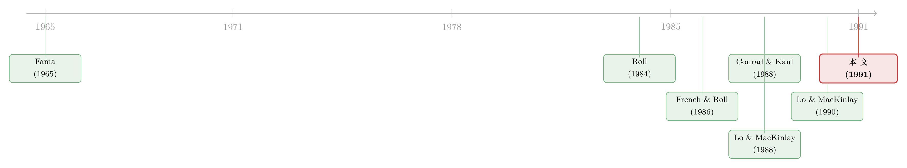

同一只股票，自己跟自己「对着干」，凑在一起却又「步调一致」
本文读的是 Conrad, Kaul & Nimalendran (1991, JFE)：把单只股票的周收益拆成「预期收益 + 买卖价差误差 + 白噪声」三块，作者发现——时变的预期收益和买卖价差合起来能解释个股收益方差的高达 24%；更妙的是，正是这一拆分，让「个股负自相关、组合正自相关」这桩老矛盾第一次被同一个模型同时讲圆。
1 一桩自相矛盾的旧账
先抛一个让人别扭的事实。
如果你把一篮子股票等权打包成一个组合，去算它周与周之间的自相关，你会看到一个又强又正的数：组合收益像被一只手往前推着走，涨了还想涨，而且公司越小，这种「惯性」越明显。Conrad and Kaul (1988, 1989)、Lo and MacKinlay (1988)、Mech (1990) 都反复看到了这件事。在一个有效市场里，这没什么可大惊小怪的——可预测，无非是预期收益在随时间变动罢了。
可一旦你把目光从「组合」缩回到「单只股票」，画面立刻翻了个面。Fama (1965)、French and Roll (1986)、Lo and MacKinlay (1988, 1990) 发现，短周期的个股收益往往是负自相关的：这一周涨了，下一周反而更可能跌一点。虽然这种负相关通常比组合的正相关要弱得多，但符号实实在在是反的。
于是矛盾就摆在桌上了：同样一批股票，单看每一只，是「自己跟自己对着干」；凑在一起，却又「步调出奇地一致」。 把一堆负自相关的东西加起来，怎么会得到一个强正自相关的组合？
接着，一个自然的问题是：有没有一个统一的模型，既能容下个股的负自相关，又能长出组合的正自相关？在这篇论文之前，大家其实已经有了一个口头上的猜想——但从没有人真把它写成模型、再拿数据去量。
2 那个口头猜想：把收益拆成三块
口头猜想是这样的（Lo and MacKinlay 1988 提出）：个股收益里其实混着三种成分——
- 一个正自相关的共同成分（大家一起动的那部分，对应时变的预期收益）；
- 一个负自相关的特质成分（来自市场微观结构，比如买卖价差的来回弹跳）；
- 一个白噪声成分。
如果是这样，那一切就说得通了：在单只股票上，买卖价差带来的负协方差压过了共同成分的正协方差，所以个股看起来是负自相关的；可一旦做成组合，那些彼此独立的微观结构噪声被分散掉了，剩下的只有大家共有的正自相关成分——于是组合就强正自相关。
听上去很顺。但口头讲故事和把账算清，是两回事。本文真正的贡献，就是把这个猜想落地成一个可估计的模型，然后逐一回答：这三块各占多大？它们的时间序列性质，真的像猜想说的那样吗？
这篇 1991 年的论文，最值得学的不是某个惊人的数字，而是一种「把含糊的直觉拆成可测量的零件」的手艺。下面我们就一步步把这台拆解机器装出来。
3 模型：从「真价格」到「成交价」
作者的全部出发点，是区分两种价格：账面上「真实」的价格，和你实际成交时看到的价格。先列出记号：
- \(P_t^o\)：时刻 \(t\) 的观测价（成交价）的对数；
- \(P_t\)：反映 \(t\) 时刻全部公开信息的「真」价；
- \(Q_t\)：买卖方向指示，成交在卖价（ask）时 \(Q_t = +1\)，成交在买价（bid）时 \(Q_t = -1\)；
- \(E_t\)：基于 \(t-1\) 时全部公开信息、对 \(t-1\) 到 \(t\) 这一期的预期收益；
- \(U_t\)：\(t-1\) 到 \(t\) 之间公开信息到达引起的「真」价调整；
- \(s\)：做市商报出的买卖价差（短期内设为常数）。
第一步，成交价等于真价加上一个买卖价差的「半跳」：
$$P_t^o = P_t + \tfrac{s}{2}\,Q_t \tag{1}$$
直觉很朴素：你若买，成交在卖价那一侧，价格被往上顶半个价差；你若卖，成交在买价那一侧，价格被往下压半个价差。\(Q_t\) 就是这个方向开关。
第二步，真价本身按「预期 + 意外」往前走：
$$P_t = E_t + P_{t-1} + U_t \tag{2}$$
这就是一个最普通的有效市场价格过程：今天的真价 = 昨天的真价 + 这一期该有的预期收益 \(E_t\) + 这一期蹦出来的信息冲击 \(U_t\)。
但真正关键的一步在于把 (1) 和 (2) 合起来，去看「成交收益」。 令 \(R_t\) 为 \(t-1\) 到 \(t\) 的连续复利成交收益，代入消元，就得到全文的灵魂方程：
其中那个误差项写开来是
$$B_t = \tfrac{s}{2}\,(Q_t - Q_{t-1}).$$
这一式 (3) 就是整篇文章的「积木图纸」：一只股票的成交收益 \(R_t\)，被干净地拆成了三块——一块正自相关的预期收益 \(E_t\)，一块由买卖价差弹跳造成的负自相关误差 \(B_t\)，一块白噪声 \(U_t\)。猜想里那三种成分，现在有了精确的数学身份。
接下来的全部工作，就是把这三块各自拎出来称重。
4 怎么把「看不见」的预期收益称出来
难点立刻来了：\(E_{it}\)（个股 \(i\) 的预期收益）根本看不见，怎么量它在收益方差里占多少？
作者的办法很取巧。个股的预期收益看不见，但组合的预期收益 \(E_{pt}\) 是可以抽出来的（Conrad and Kaul 1988 已经给了办法：对组合已实现收益建一个简洁的时间序列模型，用卡尔曼滤波或 Box-Jenkins 做条件预测，得到的就是事前预期收益）。而同一个规模组合里的股票，预期收益大体是同向波动的。于是用组合的预期收益当个股预期收益的代理，跑一个回归：
$$R_{it} = \alpha_{ip} + \beta_{ip}\,E_{pt} + \eta_{it} \tag{4}$$
这里 \(E_{pt}\) 是股票 \(i\) 所属的等权规模组合的预期收益，\(\eta_{it}\) 是残差。这个回归的 \(R^2\)（作者记作 \(\hat\rho_{ip}^2\)）就给出了「个股收益里有多少能被时变预期收益解释」的一个下界——只有在所有股票预期收益完全正相关这种不太可能的极端下，它才会等于真实占比。
作者很诚实地提醒：这个 \(R^2\) 可能带有数据窥探（data-snooping）偏误——因为构造时默认了「组合收益里的系统性规律全部来自时变预期收益」。所以它既是下界、又可能被这条假设往上抬，要小心两头夹着读。
这个代理法还顺手解释了一个本来很棘手的「不对称」现象。 Lo and MacKinlay (1990) 和 Mech (1990) 发现，大公司的收益能预测小公司的未来收益，反过来却不行——这种领先-滞后的不对称，不能用非同步交易来搪塞。作者没有强加任何均衡模型（比如单因子模型）去抽 \(E_{it}\)，而是用不同规模组合各自的预期收益去抽各自股票的预期收益。这一招的妙处在于：它天然就把「大盘领先小盘」这种不对称交叉相关继承了下来。如果作者偷懒用市场组合的预期收益去统一抽取，就会逼着所有股票的预期收益完全正相关、所有交叉相关都对称——那不对称就被人为抹平了。
（关于「大公司先动、小公司后知」这条信息扩散暗线，可参见《大公司先动，小公司后知——一条藏在「行业」里的信息暗线》。）
数据上，作者主要用 1983–1987 年 NASDAQ 股票的 CRSP 日数据，按 French and Roll (1986) 的做法把五年切成十个半年子期；周收益取「周三收盘到下周三收盘」；每个子期初按市值排成三个规模组合。值得一提的是，这个 NASDAQ 样本相当有代表性：样本中位市值约 $180 百万，与 NYSE/Amex 中位的约 $175 百万相当；平均价差 2.91%，对 NYSE/Amex 的 2.82% 也很接近。
5 三块各占多重
现在把称重结果摆出来。
第一块，预期收益。 表 1 的结果显示，个股收益和 \(E_{pt}\) 显著正相关；三个组合的 \(\hat\rho_{ip}^2\) 平均值都超过 5%（约 5.4%、5.3%、5.3%），而且横截面标准差都超过 6.5%，意味着多数个股的这个比例落在 0% 到 18% 之间。去掉一月份哑变量后几乎不变（5.2%、5.2%、5.1%），说明这不是「一月效应」这种季节性异象在撑场面。换句话说：哪怕个股整体上是负自相关的，仍有超过 5% 的方差来自一个正自相关的预期收益成分。 这一点的精神，和 Nelson and Schwert (1977) 那篇经典如出一辙——国库券的已实现实际收益自相关系数很小，却可能藏着一个高度自相关的预期收益成分。
更进一步，换到 NYSE/Amex 那个更长的样本（1962–1985），能跑月度回归。周度的 \(\hat\rho^2\) 在 2.5%–4.8% 之间，1970 年代的预期收益变动幅度差不多是 60、80 年代的两倍；而月度的占比要高得多——小公司的平均 \(\hat\rho^2\) 在 1962–1985 全期是 8.4%，在 1970 年代高达 17.7%。时间尺度越长，预期收益这块的分量越重。
第二块，买卖价差误差。 模型对 \(B_{it}\) 有非常硬的预言。多数买卖价差模型假设价差误差独立同分布（Blume and Stambaugh 1983；Roll 1984），由此可推出：
$$\operatorname{cov}(B_{it}, B_{i,t-k}) = \begin{cases} -\,s^2/4, & k = 1,\\[2pt] 0, & \text{otherwise,} \end{cases} \tag{8a}$$
$$\operatorname{var}(B_{it}) = s^2/2, \tag{8b}$$
$$\rho_{Bk} = \begin{cases} -\tfrac{1}{2}, & k = 1,\\[2pt] 0, & \text{otherwise.} \end{cases} \tag{8c}$$
也就是说，\(B_{it}\) 应当是一个 MA(1) 过程，一阶自相关恰好是 $-0.5$，二阶及以上全是零。这是个可以直接拿去对质的强假设。
怎么直接量 \(B_{it}\)？作者注意到，买价 \(BP_{it} = P_{it} - \tfrac{s}{2}Q_{it}\) 与卖价的平均，恰好抹掉了那个方向开关 \(Q_{it}\)，于是用买卖报价中点算出的「真」收益不含价差弹跳：
$$R_{it}^a = E_{it} + U_{it}. \tag{6}$$
把成交收益 (3) 减去真收益 (6)，差额就是价差误差的一个直接度量：
$$DR_{it} = R_{it} - R_{it}^a. \tag{7}$$
实证上（表 3），\(DR_{it}\) 的一阶自相关在三个组合里都稳定落在 -0.463 到 -0.472 之间——离理论值 $-0.5$ 很近，且高阶自相关都极小。\(DR_{it}\) 确实非常像一个 MA(1) 过程。轻微偏离 $-0.5$，作者归因于 NASDAQ 的买卖报价是在最后一笔成交之后才记录的，这种非同步测量带来一点 errors-in-variables，会让 \(DR_{it}\) 的方差略微高估 \(B_{it}\) 的方差。
第三块，把两块加起来。 表 4 给出每只股票收益方差里，价差误差占 \(\delta_b^2 = \operatorname{var}(DR_{it})/\operatorname{var}(R_{it})\)、预期收益占 \(\hat\rho^2\)、其余归白噪声。结论是：时变预期收益 + 买卖价差误差合起来能解释个股周收益方差的高达 24%。剩下的，才是真正不可预测的信息冲击 \(U_{it}\)。
6 反转：矛盾是怎么被同一个模型化解的
绕了一大圈，现在回到开头那桩自相矛盾的账。
于是反转出现了。有了三块拆分，那桩老矛盾不再需要两套故事：
- 在个股层面，\(B_{it}\) 这块有一个结结实实的负一阶自相关（约 $-0.47$）。它压过了 \(E_{it}\) 那点正自相关，于是个股看起来是负自相关的。作者还verified，他们的价差度量足以解释个股收益里大部分的负协方差。
- 在组合层面，各只股票的 \(B_{it}\) 彼此独立（横截面不相关是模型的关键假设之一），打包等权平均后被分散殆尽；剩下的只有大家共有的、正自相关的 \(E_{it}\)。于是组合呈现强正自相关。
同一个模型，两种符号，各得其所。这正是这篇论文最漂亮的地方：它没有引入任何新的行为假设，只靠一个「真价 + 价差」的微观结构分解，就让个股的负自相关和组合的正自相关在同一张图纸上共存。 顺带，它的预期收益代理还自动接住了 Lo-MacKinlay 的不对称交叉相关——表 2 Panel A 里，三个组合的一阶滞后交叉相关矩阵中，对角线下方的元素（如 0.324）系统性地大于上方（如 0.176），大公司对小公司的领先尤其显著；而一旦把组合自身 AR(1) 的历史信息条件掉（Panel B 的残差交叉相关），这种不对称就变得不显著了——说明不对称本就是「条件在自己过去」之后大公司没多少额外信息可言的另一种说法。
7 文献脉络
把这条线捋一捋，会看到一个很典型的「实证现象 → 微观结构解释 → 统一模型」的演进。
最早，Fama (1965) 记录了个股价格的负自相关。随后微观结构这一支给了它一个机制：Roll (1984) 用一个极简的隐含买卖价差度量，把负的一阶自协方差直接归因于买卖价差弹跳；Blume and Stambaugh (1983) 则指出价差会给计算收益带来偏误。French and Roll (1986) 在「信息到达与交易者反应」的框架下系统刻画了股票收益方差，并提供了大公司收益弱正自相关的证据。

另一支是「时变预期收益」。Conrad and Kaul (1988, 1989) 证明了组合预期收益随时间显著变动、且短周期里存在均值回归——这为本文「用组合预期收益当个股代理」埋下了技术前提。与此同时，Lo and MacKinlay (1988) 系统检验了「股价不随机游走」，记录了组合的强正自相关；他们 (1990) 又揭示了反转利润与领先-滞后的不对称交叉相关，Mech (1990) 也独立看到这种不对称。
本文 (1991) 站的位置，正是这两支的汇流点：它把「买卖价差解释负自相关」与「时变预期收益解释正自相关」装进同一个三成分模型，第一次让个股与组合的矛盾时间序列性质被统一解释；同门的 Kaul and Nimalendran (1990) 进一步追问价格反转到底是「价差误差」还是「市场过度反应」。
8 评论与延伸（Q&A + 研究方向）
Q：这和 Roll (1984) 的隐含价差度量，本质区别在哪？
Roll 的办法是从成交收益的一阶自协方差反推出隐含价差，前提是负协方差全来自价差。本文反过来：它有买卖报价中点，能直接算出价差误差 \(DR_{it}\)，再去检验它是否真是 MA(1)、一阶自相关是否真在 $-0.5$ 附近。这是「用独立数据验证假设」对「用假设反推参数」的区别——前者更可证伪。
Q：那个解释力「24%」靠谱吗？会不会是过度拟合？
要分开看。价差那一块 \(\delta_b^2\) 有报价中点这个外生度量撑着，比较硬。预期收益那块 \(\hat\rho^2\) 作者自己承认是下界、且可能带数据窥探偏误（因为默认组合的系统性规律全是预期收益）。所以「24%」更应读成「在这套代理与假设下的一个上界式拼合」，而非铁板钉钉的方差分解。
Q：买卖价差误差横截面不相关，这个假设现实吗？
这是组合层面正自相关能跑出来的命门。若不同股票的价差误差其实正相关（比如做市商共用、行业性流动性冲击），分散就不彻底，组合的正自相关会被高估来源。后来「流动性共性」这一整支文献恰恰说明价差并非完全独立（可参见《股票的「齐涨齐跌」，到底是从订单簿里长出来的吗？》）。所以这个假设在 1991 年是合理的简化，今天看则偏强。
Q：为什么不直接上一个均衡模型（如单因子）去抽个股预期收益？
作者刻意不这么做，理由很硬：单因子会逼着所有股票的预期收益完全正相关、所有滞后交叉相关对称，从而人为抹掉数据里真实存在的大盘领先小盘的不对称。用规模组合各自的预期收益当代理，反而把不对称原汁原味地保留了。这是一种「宁可代理粗糙、也不要把现象抹平」的取舍。
Q：NASDAQ 报价是成交后才记录的，这会不会污染结论？
会，但方向是已知的、可控的。非同步测量让 \(DR_{it}\) 的方差高估真实价差误差方差，从而高估价差那一块的占比。作者在附录论证：因为分母是周成交收益方差，这个上偏大概很小。再加上一阶自相关实测 $-0.47$ 已经很接近理论 $-0.5$，说明污染没有大到改变定性结论。
Q：把成交价做空-看跌的微观结构，对今天的高频还成立吗？
模型把价差设为常数、成交非买即卖。今天 tick 早已变成一美分、价内成交普遍、价差时变，硬假设都松动了。但「真价 + 交易摩擦 = 成交价」这个分解思想反而更通用了——只是 \(B_t\) 的结构需要换成时变价差、价内成交概率等更细的设定。
（b）几个可能的研究问题与提案
-
把三成分分解搬到公司债。 【经济故事】公司债成交稀疏、买卖价差巨大、且高度时变，「成交收益负自相关 vs. 组合正自相关」的张力很可能比股票更尖锐。把 \(R_t = E_t + B_t + U_t\) 用 TRACE 报价中点重做，能直接量出信用市场里「价差误差」与「时变预期收益」各占多重。 【可行性】高。TRACE 有成交价，FINRA/Bloomberg 有买卖报价，报价中点可得 \(DR_{it}\)；难点是债券交易太稀，需按发行人或评级桶聚合。识别上可借鉴本文的「组合预期收益代理」，按评级×久期建组合。
-
价差误差到底独立吗——给本文的关键假设做一次正面检验。 【经济故事】本文「组合正自相关」全靠 \(\operatorname{cov}(B_{it}, B_{jt}) = 0\)。用现代高频数据直接估计跨股票价差误差的横截面相关，看共用做市商、共同流动性冲击会让它偏离零多少，等于给整篇论文的承重墙做体检。 【可行性】中。需要带做市商标识的报价中点数据（TAQ + 做市商映射）；识别可用「共用同一做市商」做处理组，对照《你和我手里的股票，为什么会一起「变难卖」》的设计。
-
外资持有人会不会改变 \(B_t\) 的结构？ 【经济故事】外资交易更可能在价内成交、或集中在特定时段，这会改变成交价相对真价的偏离方式，进而改写个股负自相关的强度。把「可投资度」当外生变动，看价差误差成分占比如何随外资进入而变。 【可行性】中。需新兴市场的外资持股/可投资度数据（如 MSCI 限制变更）+ 报价中点；识别用可投资度的离散跳变做准自然实验（参见《外资能买的股票，为什么更「抖」？》）。
-
把分解做成「流动性危机」的实时温度计。 【经济故事】危机里价差成分 \(\delta_b^2\) 应当骤升、白噪声占比变化、预期收益成分被压缩。逐周滚动估计三成分占比，可能比单看价差水平更早、更细地刻画流动性是从哪一块「干涸」的。 【可行性】中。股票上数据齐全可直接做；推广到公司债则受成交稀疏限制，需较粗的时间桶（参见《市场快「干涸」的那一刻：股与债的流动性，原来听的是同一个人》）。
我的判断
这篇论文的贡献，是把一个含糊的口头猜想锻造成了一台可证伪的拆解机器。它最聪明的两手：一是用买卖报价中点拿到价差误差的直接度量，从而能正面检验「MA(1)、一阶自相关 $-0.5$」而不是反推；二是坚持用规模组合各自的预期收益当代理，宁愿粗糙也不抹平大盘领先小盘的不对称。最终它用一个不含新行为假设的微观结构分解，同时讲圆了个股负自相关与组合正自相关——这种「一个机制解两个现象」的经济学，是真正令人信服的那种简洁。
对识别，我有三处保留。其一，预期收益那块的 \(\hat\rho^2\) 是下界、又默认「组合系统性规律全来自时变预期收益」，数据窥探偏误的方向和大小都没被夹死，所以「24%」的拼合更像区间上沿而非点估计。其二，「价差误差横截面不相关」是组合正自相关的承重墙，可后来的流动性共性文献几乎否定了它的强形式——这意味着分散并不彻底，组合正自相关的来源可能被高估。其三，常数价差、非买即卖、报价非同步这些设定，在 1991 年的 NASDAQ 是合理简化，但限制了结论往今天市场的外推。
后续我最想看到的，是把这套三成分分解搬进公司债与信用市场：那里价差更大、交易更稀、时变更剧烈，「个股 vs. 组合」的时间序列矛盾很可能被放大成「单券 vs. 评级组合」的矛盾——而那正是流动性定价里最值钱的一块暗账。
参考文献
Blume, Marshall E. and Robert F. Stambaugh, 1983. Biases in computed returns: An application to the size effect. Journal of Financial Economics 12, 387–404.
Conrad, Jennifer and Gautam Kaul, 1988. Time-variation in expected returns. Journal of Business 61, 409–425.
Conrad, Jennifer and Gautam Kaul, 1989. Mean reversion in short-horizon expected returns. Review of Financial Studies 2, 225–240.
Conrad, Jennifer, Gautam Kaul and M. Nimalendran, 1991. Components of short-horizon individual security returns. Journal of Financial Economics 29, 365–384.
Fama, Eugene F., 1965. The behavior of stock market prices. Journal of Business 38, 34–105.
French, Kenneth R. and Richard Roll, 1986. Stock return variances: The arrival of information and the reaction of traders. Journal of Financial Economics 17, 5–26.
Gibbons, Michael R. and Wayne Ferson, 1985. Testing asset pricing models with changing expectations and an unobservable market portfolio. Journal of Financial Economics 14, 217–236.
Kaul, Gautam and M. Nimalendran, 1990. Price reversals: Bid-ask errors or market overreaction? Journal of Financial Economics, forthcoming.
Lo, Andrew and A. Craig MacKinlay, 1988. Stock market prices do not follow random walks: Evidence from a simple specification test. Review of Financial Studies 1, 41–66.
Lo, Andrew and A. Craig MacKinlay, 1990. When are contrarian profits due to stock market overreaction? Review of Financial Studies 3, 175–205.
Nelson, Charles R. and G. William Schwert, 1977. Short-term interest rates as predictors of inflation: On testing the hypothesis that the real rate of interest is constant. American Economic Review 67, 665–678.
Roll, Richard, 1984. A simple implicit measure of the effective bid-ask spread in an efficient market. Journal of Finance 39, 1127–1139.